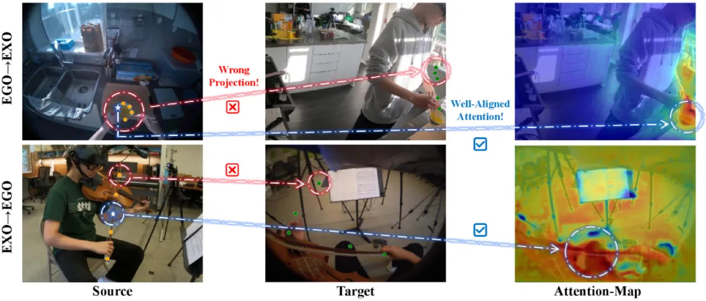
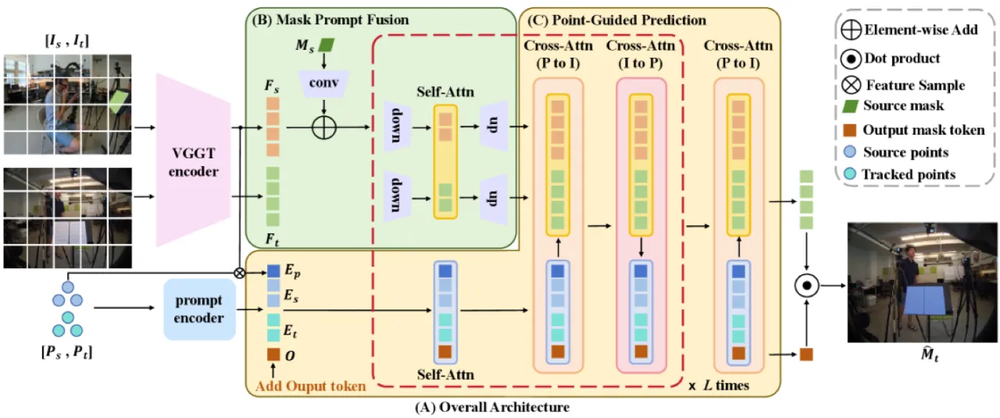
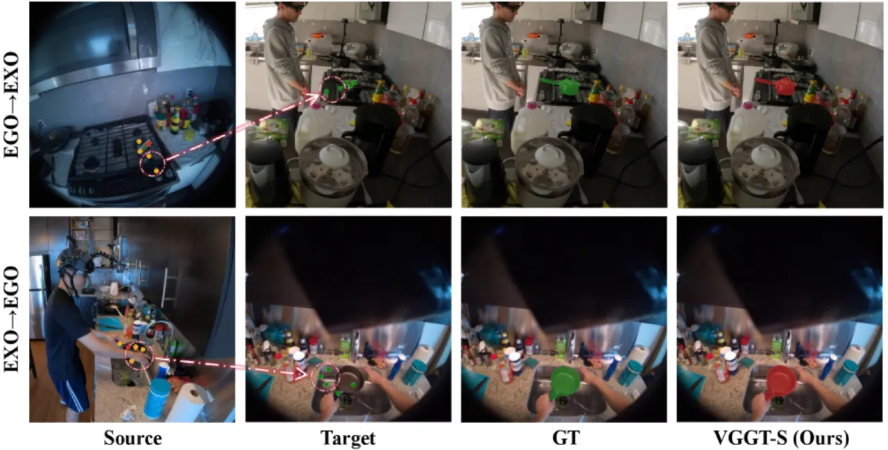
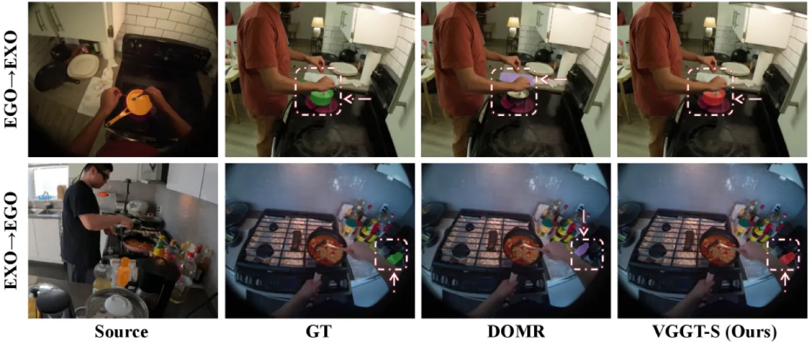

VGGT-Segmentor（VGGT-S）将 VGGT 的几何感知跨视角特征表示与全新的 Union Segmentation Head 相结合， 解决 ego–exo 场景下直接像素投影产生的系统性漂移问题，实现精确的实例级跨视角分割。 在 Ego–Exo4D 基准上，VGGT-S 分别达到 67.7%（Ego→Exo） 和 68.0%（Exo→Ego）的 average IoU，大幅超越此前最优方法。
在 ego（第一人称）与 exo（第三人称）视角之间定位并分割同一实例是 embodied AI 和远程协作的核心挑战。 由于视角、尺度与遮挡的剧烈变化，直接在像素级别进行匹配极其困难。
"While recent geometry-aware models like VGGT provide a strong foundation for feature alignment, we find they often fail at dense prediction tasks due to significant pixel-level projection drift, even when their internal object-level attention remains consistent."
作者发现 VGGT 在 ego–exo 场景下呈现出一种矛盾现象：其内部 attention 能够稳定地聚焦于目标对象区域， 但像素级点投影却存在系统性漂移（如图 1 中心列所示）。 这表明 VGGT 的特征对齐能力本质上是可靠的，问题在于如何将这种"对象级一致性"转化为精确的像素级分割结果。

VGGT-S 以 VGGT encoder 为骨干，引入 Union Segmentation Head， 通过三个协同阶段将高层特征对齐转化为精确的分割 mask： Mask Prompt Fusion → Point-Guided Prediction → Iterative Mask Refinement。

源 mask Ms 通过卷积编码为高维嵌入 Em，直接加到源特征图 Fs 上， 形成 Fs′。随后，Bottleneck Fusion 模块先将 Fs′ 和 Ft 下采样至较低分辨率（实验中为 37×37），经 Self-Attention 捕获双视角交互后再上采样回原分辨率， 产生携带目标语义的融合特征 Fs★ 和 Ft★。 该步骤以紧凑的表示统一了 mask 语义与跨视角几何信息。
从源 mask 中用 K-Means 聚类采样 5 个代表点（默认）， 利用 VGGT 的 tracking head 将其投影到目标帧，得到目标域的初始点位置。 点嵌入、图像特征与可学习 token 共同构成初始 query， 经多个带有 self-attention 和双向 point-to-image cross-attention 的轻量 decoder block 迭代细化， 输出对目标区域的初步预测 mask。这一设计利用了 VGGT 对象级别对齐的稳定性， 绕开了像素级投影的不可靠性。
对初步 mask 进行两轮（默认）迭代精化：每轮通过 dot-product 操作在目标特征图上逐步锐化边界、 填补遮挡区域，同时保持较低的计算开销。完整推理延迟为 161.4 ms（标准配置 518×518 输入）。
为消除对成对标注的依赖，论文提出单图自监督训练策略：对同一图像施加两类 augmentation 族—— VGGT-adaptive（缩放、轻微旋转，几何对应关系仍有效）与 VGGT-non-adaptive（大旋转、翻转， 需对点位置加入合成扰动）。在 SA-1B 数据集的 1/20 子集上预训练即可获得强大的迁移能力， 实现无配对标注的 correspondence-free 预训练变体。

主要在 Ego–Exo4D 基准（ego–exo 实例分割）上评估，同时在 MvMHAT（多视角多人关联）上验证跨数据集泛化能力。 评价指标使用 average IoU（Ego–Exo4D）和 AP（MvMHAT）。
| 方法 | Type | Ego→Exo IoU | Exo→Ego IoU | 备注 |
|---|---|---|---|---|
| DOMR | S | 49.7 | 55.2 | 此前最优（supervised） |
| ObjectRelator | S | — | 50.9 | 仅 Exo→Ego |
| VGGT-S（ZSL） | S | 54.1 | 58.4 | 零样本，无配对标注 |
| VGGT-S（ours） | S | 67.7 | 68.0 | 监督训练，SOTA |
VGGT-S 监督结果比 DOMR 分别提升 +18.0%（Ego→Exo）和 +12.8%（Exo→Ego）。 值得注意的是，仅使用自监督预训练的零样本版本（ZSL）已超越大多数全监督 baseline。
| 方法 | MvMHAT AP |
|---|---|
| DOMR | 71.1 |
| VGGT-S（correspondence-free, 1-epoch finetune） | 80.7 |
在 MvMHAT 数据集上仅微调 1 epoch，AP 即达 80.7%，超越 DOMR 9.6%， 验证了 correspondence-free 预训练的强迁移性。
| 配置 | Ego→Exo 提升 | Exo→Ego 提升 |
|---|---|---|
| + Bottleneck Fusion (BF) | +14.7% | +15.2% |
| + Point-Guided Prediction (PGP) | +12.0% | +11.2% |
| + Mask Refinement (MR) | +5.5% | +4.5% |
| 完整模型 | +32.2% | +30.9% |
三个组件各自贡献显著，BF 带来最大增益（引入 mask 语义与双视角交互）， PGP 次之（利用点投影弥补像素漂移），MR 进一步精化边界。 超参分析表明：Bottleneck Fusion 分辨率 37×37、采样点数 5、精化迭代次数 2 为最优配置。

VGGT-S 的核心假设是 VGGT 内部 attention 在对象级别保持一致性。 在极端遮挡或 VGGT 本身特征失效的场景下，Union Segmentation Head 的纠正能力有限。 （inferred from design）
当前 correspondence-free 预训练仅使用 SA-1B 的 1/20 子集； 扩大至全量数据或引入更多多样化场景是否能进一步提升性能尚未验证。 （inferred from design）
完整 pipeline 在标准 518×518 输入下延迟为 161.4 ms， 对于需要实时反馈的 embodied AI 应用场景可能仍有压力，论文未对模型压缩或加速进行讨论。 （inferred from design）
VGGT-S 当前设计针对单对（ego + exo）双视角的实例级分割； 论文结论提到该框架是 "a simple yet scalable solution"， 但推广至多视角或视频序列的连续帧尚未在本文探讨。 （stated in conclusion）